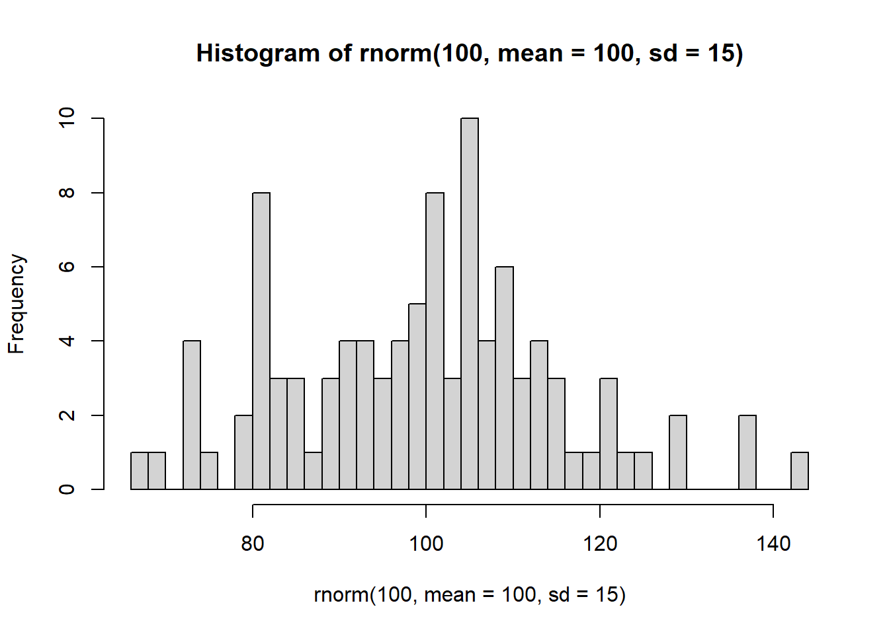
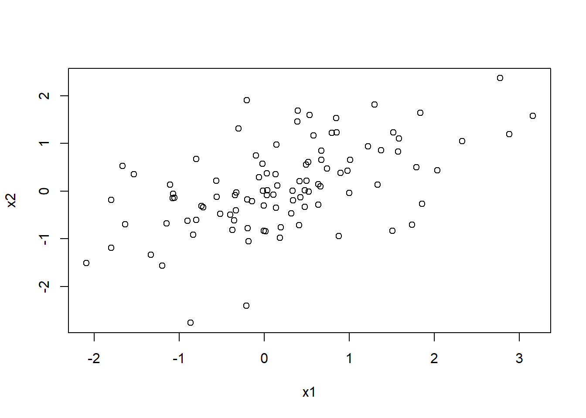
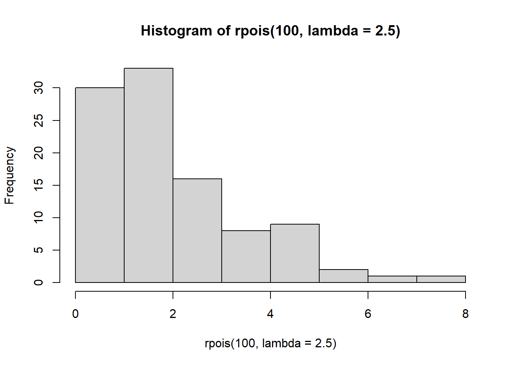
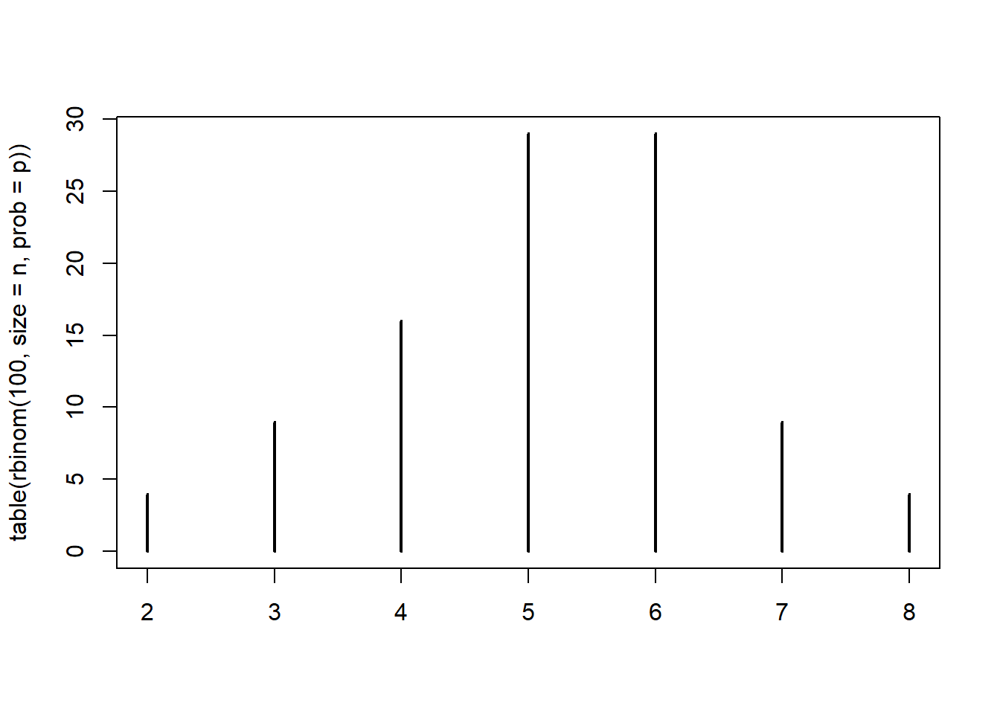
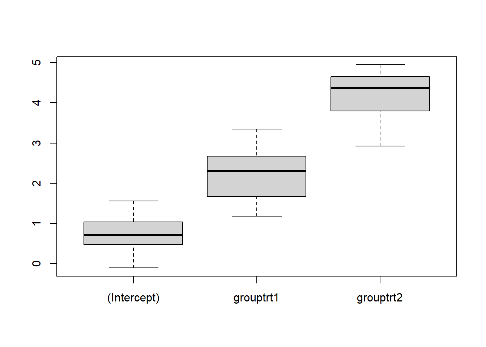

Chapter 12 Data simulation in R
In this session, we will use R to simulate data sets. Simulating data can be considered as the key idea behind hypothesis testing in the frequentist framework, where we assume that we can repeat the data collection under identical conditions. In this course, I will (hopefully) show you how to use it to draw meaningful conclusions from your data.
12.1 Overview
- Random numbers generation (
rnorm(),runif(),rpois(),rbinom(), etc.) - Generate categorical variables (
factor(),rep()) - Create data frames containing quantitative and categorical variables
(
data.frame(),expand.grid(),reshape()) - Drawing many data sets (
replicate(), for loops)
12.2 Random numbers generation
For drawing random numbers from a statistical distribution, the distribution
name is prefixed by “r” (random deviate). See ?Distributions for a list of
distributions.
Code
rnorm(10) # draw from standard normal distribution## [1] -1.57414237 0.64583220 -1.41354749 0.74087481 -1.07617875 1.40767808 0.68572922
## [8] 0.34442130 0.07640937 -0.74282934Code
runif(10) # draw from uniform distribution## [1] 0.665568487 0.717326792 0.432359260 0.985922601 0.946721491 0.628644241 0.007869274
## [8] 0.371857279 0.644679366 0.999616833Code
rpois(10, lambda = 1) # draw from Poisson distribution## [1] 1 2 3 0 2 0 1 2 1 1Code
# Sampling with or without replacement from a vector
sample(1:5, size = 10, replace = TRUE)## [1] 5 4 4 4 1 2 1 2 2 3The random numbers generator in R is seeded: Upon restart of R, new random numbers are generated. To replicate the results of a simulation, the seed (starting value) can be set explicitly:
Code
set.seed(1223) # set seed, so on each run random numbers will be identical
runif(3)## [1] 0.6289619 0.1267469 0.328582212.2.1 Normal distribution
The normal distribution with parameters \(\mu\) and \(\sigma\): \(X \sim N(\mu, \sigma^2)\).
Code
rnorm(100, mean = 100, sd = 15) |> hist(breaks = 30)
12.2.2 Multivariate normal distribution
Code
MASS::mvrnorm(100,
mu = c(0, 0),
Sigma = matrix(c(1, 0.5, 0.5, 1), nrow = 2, ncol = 2)) |>
plot(xlab = "x1", ylab = "x2")
12.2.3 Poisson distribution (for count data)
The Poisson distribution is a discrete probability distribution that is used to model the probability of a given number of events occurring in a fixed interval of time if these events occur with a known constant mean rate (\(\lambda\)) and independently of the time since the last event.
Code
rpois(100, lambda = 2.5) |> hist()
12.2.4 Binomial distribution
The binomial distribution with parameters \(n\) and \(\pi\) is the discrete probability distribution of the number of successes in a sequence of n independent (Bernoulli) experiments: \(X \sim Binom(n, \pi)\).
Generate data from a binomial model using the function rbinom() in R; try
out different values of
– \(n\) (10, 500, 2000)
– the parameter \(\pi\) (0.5, 0.8, 0.44, 0.515)
and see how this affects the output.
Code
n <- 10 # 500, 2000
p <- 0.5 # 0.8, 0.44, 0.515
rbinom(100, size = n, prob = p) |> table() |> plot()
- With these data, test different null hypotheses using binom.test(); these may or may not coincide with the values of \(\pi\) used for data generation.
Code
x <- rbinom(1, size = 10, prob = 0.3)
binom.test(x, n = 10, p = 0.5)##
## Exact binomial test
##
## data: x and 10
## number of successes = 1, number of trials = 10, p-value = 0.02148
## alternative hypothesis: true probability of success is not equal to 0.5
## 95 percent confidence interval:
## 0.002528579 0.445016117
## sample estimates:
## probability of success
## 0.1- If you repeat data generation and testing, can you usually reject H0?
Code
pval <- replicate(500, {
x <- rbinom(1, size = 50, prob = 0.3)
binom.test(x, n = 50, p = 0.5)$p.value
}
)
mean(pval < 0.05)## [1] 0.77812.3 Creating factors
It is usually good practice to create categorical variables explicitly as factors. Everything that is not a numeric variable should be a factor (e.g., id variables).
Code
sex <- factor(rep(c("male", "female"), c(15, 20)),
levels = c("male", "female", "diverse"))
sex## [1] male male male male male male male male male male male male
## [13] male male male female female female female female female female female female
## [25] female female female female female female female female female female female
## Levels: male female diverseCode
condition <- factor(rep(1:2, 20), levels = 1:2, labels = c("real", "VR"))
condition## [1] real VR real VR real VR real VR real VR real VR real VR real VR real
## [18] VR real VR real VR real VR real VR real VR real VR real VR real VR
## [35] real VR real VR real VR
## Levels: real VRCode
group <- factor(rep(c("ctr", "trt1", "trt2"), each = 5))
group## [1] ctr ctr ctr ctr ctr trt1 trt1 trt1 trt1 trt1 trt2 trt2 trt2 trt2 trt2
## Levels: ctr trt1 trt2The levels argument sets explicitly the ordering of the factor levels. In
dummy coding (default in R) the first factor level is taken as the reference
category.
Code
model.matrix( ~ group)## (Intercept) grouptrt1 grouptrt2
## 1 1 0 0
## 2 1 0 0
## 3 1 0 0
## 4 1 0 0
## 5 1 0 0
## 6 1 1 0
## 7 1 1 0
## 8 1 1 0
## 9 1 1 0
## 10 1 1 0
## 11 1 0 1
## 12 1 0 1
## 13 1 0 1
## 14 1 0 1
## 15 1 0 1
## attr(,"assign")
## [1] 0 1 1
## attr(,"contrasts")
## attr(,"contrasts")$group
## [1] "contr.treatment"Code
contrasts(group)## trt1 trt2
## ctr 0 0
## trt1 1 0
## trt2 0 112.4 Data frames
When simulating data for a certain experimental design, this is reflected in
the structure of your data frame. For the group variable from above, the
design looks like this
Code
model.matrix( ~ group) |> unique()## (Intercept) grouptrt1 grouptrt2
## 1 1 0 0
## 6 1 1 0
## 11 1 0 1A linear model will make use of this design and estimate three parameters: \[\begin{align*} \beta_0 & = \text{mean of control group} \\ \beta_1 & = \text{effect of treatment group 1} \\ \beta_2 & = \text{effect of treatment group 2} \\ \end{align*}\]
For a repeated-measures (within-subjects) design, the data frame will usually be in a long format.
Code
n <- 20
# A and B are recycled to match the length of id
datsim <- data.frame(id = factor(rep(1:n, each = 4)),
A = factor(rep(c("a1", "a2"), each = 2)),
B = factor(rep(c("b1", "b2"), times = 2)))
xtabs( ~ A + B, datsim)## B
## A b1 b2
## a1 20 20
## a2 20 20Code
xtabs( ~ id + A + B, datsim) |> ftable()## B b1 b2
## id A
## 1 a1 1 1
## a2 1 1
## 2 a1 1 1
## a2 1 1
## 3 a1 1 1
## a2 1 1
## 4 a1 1 1
## a2 1 1
## 5 a1 1 1
## a2 1 1
## 6 a1 1 1
## a2 1 1
## 7 a1 1 1
## a2 1 1
## 8 a1 1 1
## a2 1 1
## 9 a1 1 1
## a2 1 1
## 10 a1 1 1
## a2 1 1
## 11 a1 1 1
## a2 1 1
## 12 a1 1 1
## a2 1 1
## 13 a1 1 1
## a2 1 1
## 14 a1 1 1
## a2 1 1
## 15 a1 1 1
## a2 1 1
## 16 a1 1 1
## a2 1 1
## 17 a1 1 1
## a2 1 1
## 18 a1 1 1
## a2 1 1
## 19 a1 1 1
## a2 1 1
## 20 a1 1 1
## a2 1 1Code
# OR
id <- factor(1:n)
A <- factor(c("a1", "a2"))
B <- factor(c("b1", "b2"))
datsim2 <- expand.grid(id = id, A = A, B = B) |> sort_by(~ id + A)We can transform the data frame between long and wide data format with
reshape().
Code
datl <- data.frame(id = factor(rep(1:n, each = 7)),
time = rep(0:6, times = n),
resp = rnorm(n * 7,
mean = seq(1, 5, length.out = 7), # seven means
sd = 1))
aggregate(resp ~ time, datl, mean)## time resp
## 1 0 1.034856
## 2 1 1.648281
## 3 2 2.334861
## 4 3 2.732789
## 5 4 3.600051
## 6 5 3.842304
## 7 6 5.031247Code
datw <- reshape(datl, direction = "wide",
idvar = "id",
timevar = "time")
colMeans(datw[, -1])## resp.0 resp.1 resp.2 resp.3 resp.4 resp.5 resp.6
## 1.034856 1.648281 2.334861 2.732789 3.600051 3.842304 5.031247Code
cor(datw[, -1])## resp.0 resp.1 resp.2 resp.3 resp.4 resp.5 resp.6
## resp.0 1.00000000 -0.1515961 0.09738831 -0.32935371 -0.3494126 0.05470633 -0.23307043
## resp.1 -0.15159614 1.0000000 0.54631105 0.12950803 -0.2360399 0.38303961 0.32874890
## resp.2 0.09738831 0.5463110 1.00000000 -0.04246943 -0.3037968 0.05777371 0.12258577
## resp.3 -0.32935371 0.1295080 -0.04246943 1.00000000 0.1153210 0.13318325 0.09966404
## resp.4 -0.34941260 -0.2360399 -0.30379682 0.11532103 1.0000000 -0.42137211 -0.20102584
## resp.5 0.05470633 0.3830396 0.05777371 0.13318325 -0.4213721 1.00000000 0.15399528
## resp.6 -0.23307043 0.3287489 0.12258577 0.09966404 -0.2010258 0.15399528 1.0000000012.5 Simulate repeatedly
- Reading material on functional programming in R (Wickham, 2019)
Code
set.seed(1133)
replicate(3, rnorm(10), simplify = FALSE)## [[1]]
## [1] 1.3234050 1.0672355 -0.4970425 -0.7444275 0.1860472 1.0540061 0.9051997 0.5745372
## [9] 2.0237698 0.1831237
##
## [[2]]
## [1] 0.25400660 -0.71355882 1.44786556 0.90886066 -2.02238191 0.27064121 -0.97261079
## [8] 0.01889436 2.08511877 -0.88604130
##
## [[3]]
## [1] 0.3268653 1.4123795 -0.4843307 2.5777461 0.2671252 -0.9092667 -2.3162740 0.9670641
## [9] -1.5804482 0.3733937Code
set.seed(1133)
replicate(3, rnorm(10))## [,1] [,2] [,3]
## [1,] 1.3234050 0.25400660 0.3268653
## [2,] 1.0672355 -0.71355882 1.4123795
## [3,] -0.4970425 1.44786556 -0.4843307
## [4,] -0.7444275 0.90886066 2.5777461
## [5,] 0.1860472 -2.02238191 0.2671252
## [6,] 1.0540061 0.27064121 -0.9092667
## [7,] 0.9051997 -0.97261079 -2.3162740
## [8,] 0.5745372 0.01889436 0.9670641
## [9,] 2.0237698 2.08511877 -1.5804482
## [10,] 0.1831237 -0.88604130 0.3733937Code
# Using a for loop
## Create an empty list
l1 <- vector(mode = "list", length = 3)
## Loop to add elements to the list
for(i in 1:3) {
l1[[i]] <- rnorm(10)
}
l1## [[1]]
## [1] -1.4462982 -1.0249066 1.7273781 0.7970825 -0.1921147 0.2560200 0.7947771 -0.4665010
## [9] 0.5127336 -0.4892820
##
## [[2]]
## [1] 1.873255506 -0.450625527 -1.060191680 -0.410976388 -0.631345739 -0.646261755
## [7] -0.347821457 0.002526977 -1.474943882 -0.903203170
##
## [[3]]
## [1] -0.5318484 -0.9318605 0.6605868 -1.3563084 -1.4592700 -0.3774795 0.1023129 -0.2826929
## [9] -0.4166077 0.1255623Code
## Grow a matrix
mat <- NULL
for(i in 1:3) {
mat <- cbind(mat, rnorm(10))
}
mat## [,1] [,2] [,3]
## [1,] -1.27717070 -0.1744192 -0.09960859
## [2,] 0.08109145 -1.1686442 -0.06927740
## [3,] 1.46141004 -0.1793560 0.20608944
## [4,] 1.03355461 -0.0960317 -2.17113052
## [5,] -0.31967339 -1.4917276 0.52429185
## [6,] 0.37209221 -1.1401370 0.04022837
## [7,] 1.80480805 -0.2392017 -0.10797109
## [8,] 0.69115420 1.8640513 1.35247834
## [9,] 1.93660079 -1.3204190 -0.25169725
## [10,] 0.56133067 1.3491119 0.5775612312.5.1 Simulate many data sets
Code
# Create a list of data sets
data_sets <- replicate(20, {
data.frame(id = factor(1:15),
group = rep(c("ctr", "trt1", "trt2"), times = 5),
resp = rnorm(5 * 3,
mean = c(1, 3, 5), # three means
sd = 1))
},
simplify = FALSE
)
data_sets[[1]]## id group resp
## 1 1 ctr 0.18938344
## 2 2 trt1 4.60991374
## 3 3 trt2 6.49335383
## 4 4 ctr 1.24668163
## 5 5 trt1 1.97917586
## 6 6 trt2 5.98611621
## 7 7 ctr 0.53481673
## 8 8 trt1 2.32272608
## 9 9 trt2 5.13326355
## 10 10 ctr -0.09014815
## 11 11 trt1 1.61527749
## 12 12 trt2 3.96499841
## 13 13 ctr 1.11900065
## 14 14 trt1 0.68836079
## 15 15 trt2 6.13870532Code
# Use apply functions to fit model to each data set
fit_model <- function(data) {
lm(resp ~ group, data = data)
}
models <- lapply(data_sets, fit_model) # create list of fitted models
summary(models[[1]])##
## Call:
## lm(formula = resp ~ group, data = data)
##
## Residuals:
## Min 1Q Median 3Q Max
## -1.57829 -0.51919 -0.06513 0.55724 2.36682
##
## Coefficients:
## Estimate Std. Error t value Pr(>|t|)
## (Intercept) 0.5999 0.4820 1.245 0.2370
## grouptrt1 1.6431 0.6816 2.411 0.0329 *
## grouptrt2 4.9433 0.6816 7.252 1.01e-05 ***
## ---
## Signif. codes: 0 '***' 0.001 '**' 0.01 '*' 0.05 '.' 0.1 ' ' 1
##
## Residual standard error: 1.078 on 12 degrees of freedom
## Multiple R-squared: 0.8197, Adjusted R-squared: 0.7897
## F-statistic: 27.28 on 2 and 12 DF, p-value: 3.432e-05Code
pars <- sapply(models, coef)
rowMeans(pars)## (Intercept) grouptrt1 grouptrt2
## 0.7440095 2.2232360 4.2134159Code
boxplot(t(pars))
12.6 Example: Type I error
Code
lm0 <- lm(dist ~ 1, cars) # H0
lm1 <- lm(dist ~ speed, cars) # H1
nsim <- 1000
pval <- numeric(nsim)
for (i in 1:nsim) {
sim <- simulate(lm0)$sim_1
fit <- lm(sim ~ speed, cars)
pval[i] <- summary(fit)$coef["speed", "Pr(>|t|)"]
}
# Type I error
mean(pval < 0.05)## [1] 0.04